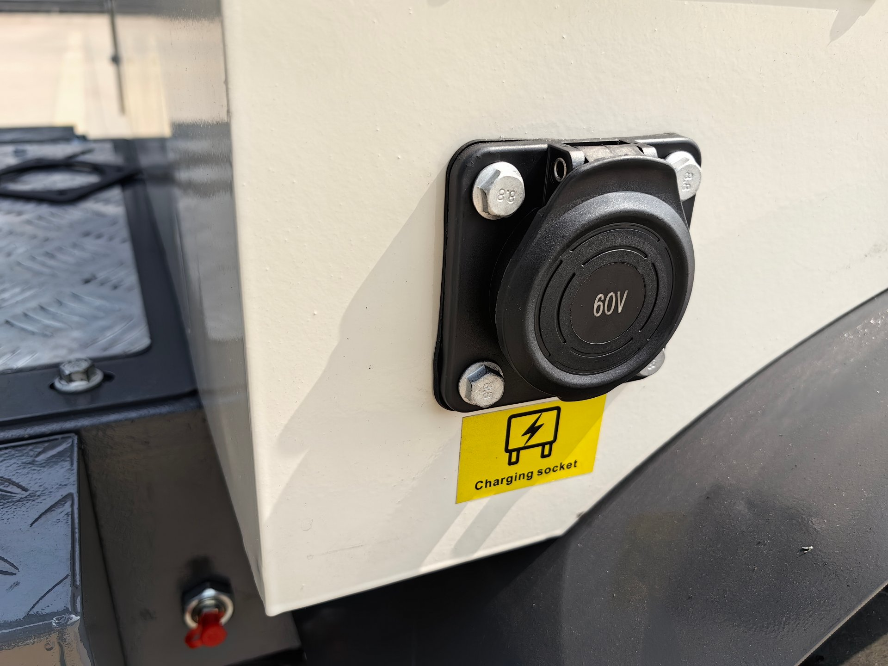
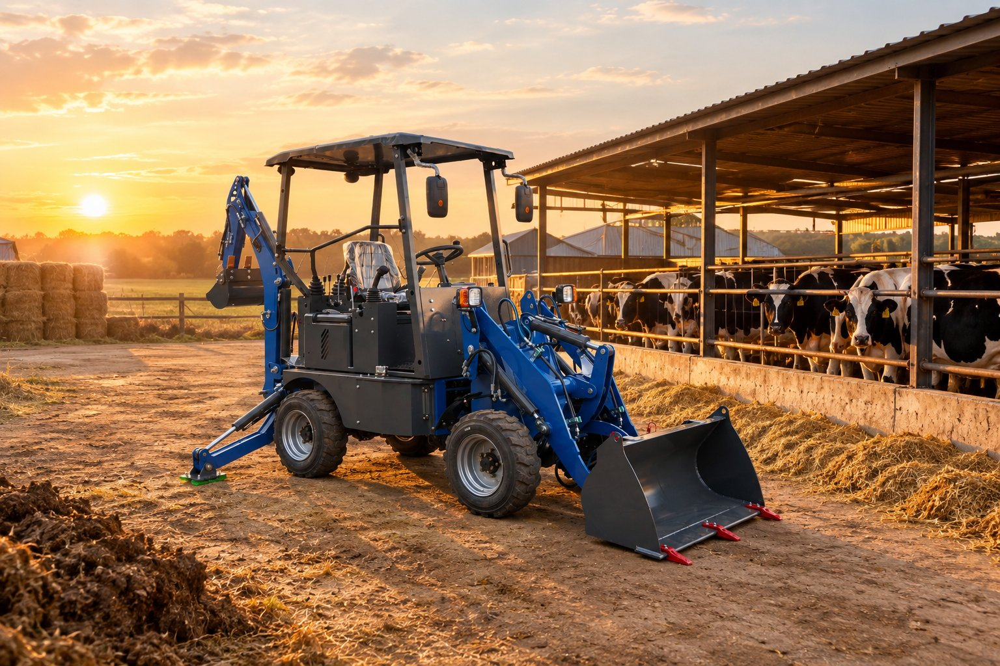

The socket on the side of the machine is where this entire comparison is actually decided. Before you compare digging numbers, ask two questions about this panel: where does the machine sleep at night, and can that socket be powered every single evening? Answer those honestly and the electric-versus-diesel question usually answers itself.
Before Anything Else: This Is Not an Upgrade Question
Most comparisons of electric and diesel equipment are written like a ladder: diesel at the bottom, electric at the top, and a gentle suggestion that you would be foolish to stay at the bottom. I do not sell machines that way, because it is not true. Electric is not a higher step on the same staircase — it is a different staircase, and it leads somewhere different.
The logic I use for every configuration decision applies here exactly: engines follow your country's rules, axles follow your ground, and the power source follows your job site. A greenhouse contractor inside a city with noise limits and a diesel mini is not "old-fashioned" — he is trapped, and possibly fined. A farmer an hour from the nearest town, with no reliable power at the barn, does not have a "less advanced" work site — he has a site where a diesel engine is the only answer that survives Monday morning. Both of those buyers made the right call. Neither should switch.
So this article has no winner. It has a matching exercise. We build the BL 15-06 electric mini and the BL 20-07 diesel mini in the same plant, I have watched both go to completely different customers and be completely correct for each of them, and I have watched a few buyers choose wrong on both sides of the line. Those mistakes are more useful to you than any specification table.
What an Electric Mini Backhoe Loader Actually Is
Let me first deflate the mystery. An electric mini backhoe loader is not a concept vehicle or a science project. It is a compact backhoe loader — same boom, same dipper, same bucket, same loader arms, same controls — with a battery pack and electric drive in place of a fuel tank and combustion engine. Our BL 15-06 runs a 72V/120V battery system, charges in roughly six to eight hours, and produces zero exhaust at the point of work.
Three things follow from that, and they are the whole story of this comparison:
- No exhaust means the machine can work where diesel cannot legally or physically go — indoors, in greenhouses, in food-processing yards, in tunnels, in city centres with emission rules.
- A battery means the machine works as long as the charge lasts, then stops while it refills — six to eight hours of charging is a shift-planning fact, not a footnote.
- Fewer fluids and moving parts in the drive means a shorter service list — no engine oil, no fuel filters, no exhaust after-treatment — in exchange for a component (the battery) that has its own lifecycle your diesel machine simply does not have.
Everything else — the digging geometry, the hydraulics, the tyres, the trailers you carry it on — is shared between the two machines. The comparison is really about where the machine works and how the day is organised around it.
Where Electric Wins Without an Argument
There are jobs where the electric mini is not just acceptable but is the only correct machine, and I want to be as loud about this as I am about its limits:
- Indoor demolition and renovation. Concrete floors, warehouse interiors, livestock buildings — anywhere exhaust has nowhere to go. A diesel machine inside a closed building is not a compromise; it is a safety incident and a fine.
- Greenhouses and food-adjacent sites. Growing operations, packing yards, any site where fumes, fuel spills or soot land on something that gets eaten or inspected. Zero emission is not a marketing line here; it is the reason the job is legal.
- City work under noise and emission rules. Residential neighbourhoods, schools, hospitals, historic centres — the places where a diesel engine at 7 a.m. generates complaints, and where low-emission zones are tightening every year.
- Sites with strict fire or contamination rules. No fuel storage on site, no hot components near dry material, no oily residue on floors that matter.
In each of these, the electric mini is not winning a contest against diesel — the diesel entry is disqualified before it starts. If your work looks like this list, you are not weighing options; you are confirming a requirement.
Where Diesel Still Wins Without an Argument
Now the other side, which the glossy comparisons prefer to skip:
- Sites without dependable charging power. Farms, orchards, road maintenance, remote projects. If you cannot guarantee a charged machine every morning, you cannot guarantee a working machine — and "it will probably be charged" is not a schedule a contractor can bid work on.
- Long continuous shifts. A diesel mini refuels in minutes and runs again. When the working day is measured in engine hours rather than battery hours, and the machine cannot pause half a day to charge, diesel is not the traditional choice — it is the only one that meets the requirement.
- Markets where fuel is easy and power is not. In much of the world, a jerrycan of diesel is a solved problem and a reliable 220V socket at the barn is not. The "advanced" machine on paper is the dead machine in practice.
- First-machine simplicity. A buyer whose local mechanic can service a simple diesel driveline but has never touched a battery management system is making a service decision, not a technology preference. I wrote about how configuration must match the service environment in the configuration matching guide — the power source obeys the same law.
Our diesel answer in this class is the BL 20-07: a 25 kW Changchai 390 engine, 2,350 kg, small enough to trailer behind a pickup, simple enough that parts and mechanics exist everywhere. It is not the fallback option — for its buyers, it is precisely the right machine, and I say that as the person who sells the electric one too.
Six Questions That Decide It
Forget specifications for a moment. These six questions, answered honestly about your own work, will point at the right machine with embarrassing clarity:
| The question | If the honest answer is… | Then |
|---|---|---|
| Will the machine ever work indoors or in enclosed spaces? | Yes, regularly | Electric — this alone can decide it |
| Is there reliable power where the machine sleeps at night? | No, or not dependable | Diesel — a charging plan you cannot trust is no plan |
| Does your site have noise or emission limits? | Yes — city, residential, low-emission zone | Electric, comfortably |
| Can your working day absorb a 6–8 hour recharge window? | No — the machine must run all day | Diesel, or a conversation about shift patterns first |
| Who maintains machines like this near you? | Diesel mechanics, no EV experience | Lean diesel until that changes — this is a service reality, not a preference |
| How many hours a day does it actually dig? | Under two hours, light tasks, many moves | Electric suits short, frequent, quiet work beautifully |
Most buyers who read this table know their answer by row three or four. If you are still genuinely torn after all six — that is a good sign, because it means both machines genuinely fit, and the decision becomes a running-cost conversation rather than a capability one.
What Electric Asks of Your Site Before It Digs
The electric machine asks one thing diesel never does: infrastructure homework. Before the order, not after delivery, you should know:
- Where the machine charges, on which circuit, and how long that circuit takes. "It plugs in" is not an answer — six to eight hours is the factory figure for a proper charge, and the socket you actually have determines whether that figure is real on your site.
- What your charging window is. Overnight charging is the natural pattern: the machine sleeps where it works, and starts the day full. If your machine moves between sites daily, charging becomes logistics — plan it before buying, not after the first dead Tuesday.
- Who your electrician is. Not for the machine — for the site. Ask them what it takes to charge equipment overnight where you work. That one phone call, before the order, is worth more than any brochure.
None of this is a reason not to buy electric. It is the same homework diesel asks in a different currency — fuel storage, delivery, spill handling. Both machines ask your site a question; they just ask different ones. The buyers who get this wrong are the ones who answered neither question before wiring a deposit.
Running Costs: The Comparison Nobody Does Honestly
Here is where most articles produce a confident number, and I am going to disappoint you on purpose: I am not going to quote a cost-per-hour figure, because I do not know your electricity tariff, your diesel price, or your hours. Anyone who prints "electric saves X% on running costs" is describing an average that exists nowhere in particular. What I will give you is the calculation to run on your own numbers, because it is not complicated:
- Energy in: your local electricity price per full charge, versus your local diesel price times the litres a mini diesel actually burns in your kind of day. Your supplier can give you both figures from real machines — ask for them.
- Scheduled service: the diesel has engine oil, oil filters, fuel filters, air filters, and exhaust after-treatment items on its list; the electric drive removes most of that. Ask both suppliers for the full first-year service schedule and simply count the lines.
- Consumables both share: hydraulic oil and filters, tyres, pins and bushings, buckets and teeth. Fair comparisons include these in both columns, because they do not differ.
- The battery line: the electric machine carries a component that ages on a cycle you should ask about openly — expected service life, replacement cost, and whether it is replaceable per-module or as one unit. A supplier who cannot answer that comfortably is telling you something.
The honest move is to ask for two written quotations with first-year service schedules included — one electric, one diesel — and to run the four lines above on your own numbers. It takes an evening, and unlike a percentage from the internet, the answer will be about your site and your tariffs, so it will actually be true.
What I will say from the factory side, without numbers: for the right duty cycle, the running-cost story of electric is real, not invented. What it is not, is automatic. If the machine sits half-charged because the socket situation was never sorted, the cheapest driveline in the world is still an expensive machine doing nothing.
"But Is It Powerful Enough?" — The Torque Question, Asked Properly
Buyers ask this question as if it has one answer. It has two, and both are worth knowing:
On paper, electric drive is generous with torque. An electric motor delivers its maximum torque from zero RPM — there is no revving into a power band, no turbo waiting to spool. For the moment a bucket bites into hard ground, that immediate response is a genuine, physical advantage, and operators notice it the first day.
On site, the honest question is not torque — it is total energy. A diesel machine carries its energy as fuel and can refill in minutes; a battery carries a fixed amount and must pause to recover. So the real question is not "can it dig as hard" — at mini-loader scale, the electric digs properly — but "can it dig as long as my day requires." That is a question about your schedule, not about the motor. A buyer who asks me "is it powerful enough" gets a question back: "powerful for how many hours, on what ground, moving how much material?" Answer that, and the machine question answers itself.
Two Buyers I Have Watched Get This Wrong
Both mistakes are common enough to be worth naming.
The indoor contractor who bought diesel "to be safe." He reasoned that diesel was the proven technology, the safe choice, the thing everyone he knew ran. Then his city tightened emission rules and his site list migrated indoors, and the safe machine became the machine that could not enter half his jobs. "Safe" described what he knew, not what his work had become. For him, the electric mini was not the bold option — it was the boring, obvious one.
The rural buyer who bought electric "because it's the future." Beautiful machine, genuine advantages — and a site with a socket that tripped whenever the barn lights and the charger ran together. The machine spent its first month working shorter days than the horse it replaced would have. The future arrived at his farm on a 16-amp circuit that could not carry it. What fixed it was not regret — it was an afternoon with an electrician and a proper circuit, after which the machine did exactly what it promised. But the lesson stands: the site question comes before the machine question, on both sides of this comparison.
The Honest Match Table
Because I sell both, I get asked "which would you buy" weekly. My answer is always the table, not a verdict — because the right row depends on you, and you are better placed to find your row than I am to guess it:
| If your work looks like this… | The matched machine | What I would tell you if you asked for the other one |
|---|---|---|
| Indoor renovation, greenhouses, food yards, city emission zones | Electric mini (BL 15-06 class) | "The diesel cannot legally follow you into the work you described — this is not a preference" |
| Farm or orchard, no dependable charging, long variable days | Diesel mini (BL 20-07 class) | "Let's first spend one afternoon confirming your charging reality; then we can talk" |
| Quiet residential work, short frequent tasks, day moves between sites | Electric, if nights are at a powered base | "Your pattern suits electric — but tell me where it sleeps before we decide" |
| All-day continuous digging, remote sites, fuel logistics already solved | Diesel | "Nothing about your day gives the battery a window — this would be a schedule problem, not a machine problem" |
| Mixed work — some indoor, some field, one machine only | A genuine conversation — bring your last month of jobs | "This is the one case where I ask for your job list before quoting anything" |
Notice what is not in this table: any row where I talk someone out of electric to protect a sale, or into electric because it photographs well. The machine is either matched to the work or it is not, and an unmatched machine is expensive in whichever direction it mismatches.

A livestock yard is the classic mini backhoe loader duty cycle: yard scraping, bedding, fence posts, drainage — short jobs scattered across a working day, moving constantly between buildings and paddocks. What makes a farm like this choose diesel or electric is never the front bucket. It is whether the machine goes to sleep somewhere it can be plugged in.
If You Are Still Torn
If you have read this far without a clear answer, here is the process I would run in your position:
- Write down your last month of work, honestly. Indoors or outdoors. Hours the machine actually ran. Where it slept at night. That list, not a brochure, is your duty cycle.
- Ask your electrician one question: what would overnight charging take at your site? The answer is either a green light or the whole decision.
- Ask for two quotations with first-year service schedules — one electric, one diesel — and run the four cost lines from earlier on your own numbers.
- Then buy the machine that matches, and stop re-deciding. Both machines are good. The mistake is never the machine; it is the mismatch.
And if you want a second pair of eyes on step one, that is genuinely my job. Tell me your sites, your hours, your power situation and your service reality, and I will tell you which machine I would order in your position — including when the answer is "not the one you expected," on either side.
Torn Between Electric and Diesel?
Send me your real working week — sites, hours, where the machine sleeps, what power you have. I build both machines, I sell both, and I will tell you which one I would order in your position. Including the answer that sells neither.
Ask Vivian on WhatsApp